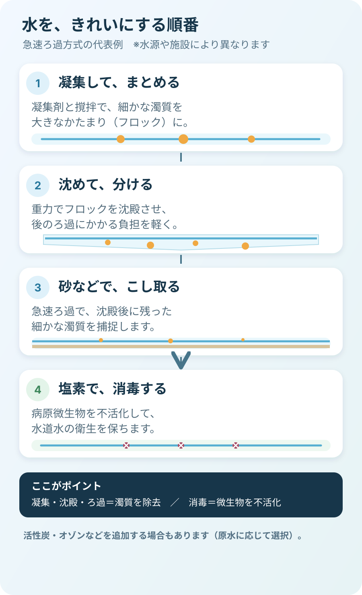
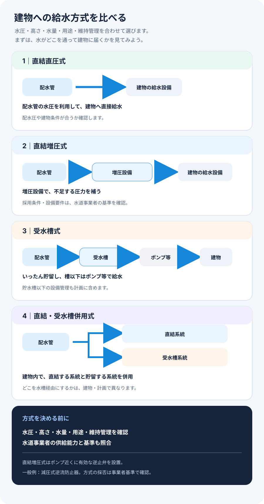
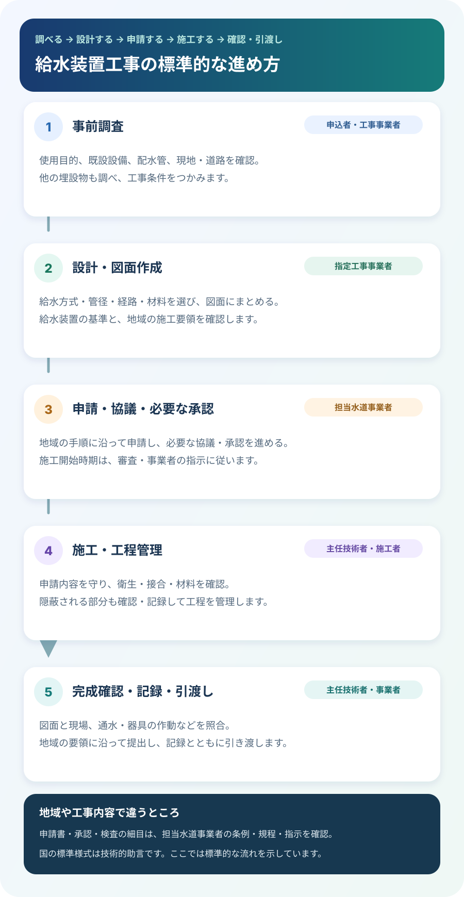

公衆衛生概論
水をきれいにする仕組み
凝集から消毒まで、浄水の工程と役割がひと目でつながります。
QUREVANT · iOS / Android
App Store・Google Playで近日公開予定
水源から蛇口までの流れも、給水方式の選び方も。99点の図解で仕組みをつかみ、321問のオリジナル問題で理解を確かな力へ。今日の学習から試験日まで、一歩ずつ進められます。
図解つき教材を見る教材・問題数はアプリの収録内容に基づきます。
SEE THE BIG PICTURE
丸暗記で終わらせないために、教材には99点の図解を用意しました。複雑な仕組みや工程をひと目で整理し、文章と行き来しながら理解を深められます。

凝集から消毒まで、浄水の工程と役割がひと目でつながります。

直結式・受水槽式の違いと、選ぶときの視点を見比べます。

工事の各段階と確認事項をたどり、手順を整理できます。
掲載図はアプリ教材に収録している図解の一例です。図の内容・手順は教材内の注記もあわせてご確認ください。
LESSON + PRACTICE
教材でつかんだ知識をすぐ問題で確認。答え合わせで終わらず、選択肢ごとの解説から「なぜそうなるか」まで身につけます。
水源の水（原水）は、必要に応じて貯水され、取水・導水・浄水・送水・配水の各機能を経て、配水管から給水装置を通り給水栓へ届きます。
浄水施設は、原水を処理して水道水をつくる施設です。浄水を貯めて需要変動に備えるのは、配水池など配水施設の役割です。
LEARN YOUR WAY
試験日や生活リズムに合わせて計画を立て、教材を読み、問題を解き、復習につなげられます。
学習期間、周回数、1日の目安、休養日を設定して、今日取り組む範囲を確認できます。
8科目83教材に99点の図解を収録。321問の独自問題は、回答後に解説を読んで理解を確かめられます。
回答履歴、ブックマーク、模擬試験の記録から、学習の進み具合を振り返れます。
OFFICIAL PAST QUESTIONS
アプリでは教材ごとに関連する年度・科目・問題番号を確認でき、公式の過去問題冊子へ移動できます。学んだテーマが試験でどう問われるか、公式資料で確かめながら学習できます。
給水工事技術振興財団の過去問題一覧 アプリ内の問題は独自作成です。過去問そのものを収録したり、試験実施機関が公認したりするものではありません。FREE + PREMIUM
無料版では学習プランと公衆衛生概論の学習、模擬試験Aを利用できます。買い切りのプレミアム版では全科目、ランダム演習、模擬試験B〜Eなどを利用できます。
本アプリは学習を支援するもので、試験実施機関や行政機関が提供・公認するものではありません。模擬試験はアプリ独自問題を使った練習機能であり、公式な採点や合格判定を行うものではありません。法令や制度は変更されることがあるため、最新情報は公的な資料もご確認ください。